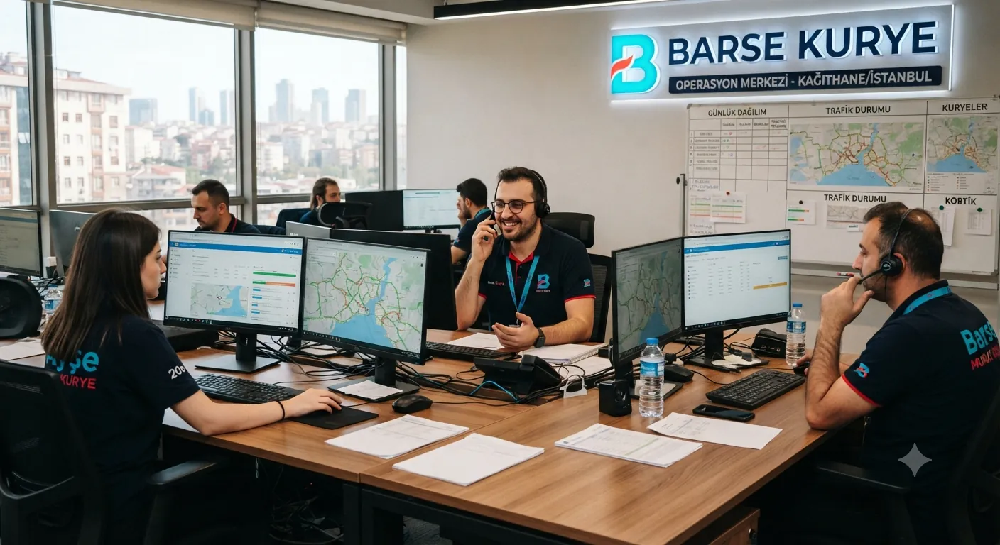

Normal Teslimat
Gün içinde ulaşması gereken evrak ve paketler için planlı, ekonomik çözüm.
120–180 dakika
Barse Kurye, İstanbul'un 39 ilçesinde moto kurye ağı ve Türkiye geneli uçak/gümrük kurye hizmetiyle evrak ve paketlerinizi güvenle, zamanında teslim eder.
Hizmetlerimiz
Standart evraktan acil gönderiye kadar, ihtiyacınıza göre üç farklı teslimat seçeneği.
Gün içinde ulaşması gereken evrak ve paketler için planlı, ekonomik çözüm.

Acil gönderileriniz için en yakın ekip hızlıca yönlendirilir, taşıma önceliklidir.

Gönderiniz tek seferde, doğrudan ve bekletmeden teslim edilir. En kısa sürede kapıda.
Neden Barse
Güzergâha en uygun kurye, operasyon ekibi tarafından anında atanır.
Gönderiniz alımdan teslime kadar canlı olarak takip edilir.
39 ilçede motorlu, ihtiyaç halinde araçlı teslimat desteği.
Gece gündüz ulaşabileceğiniz telefon hattı ve WhatsApp.
Fiyat
Alım ve teslim adresini iletin, dakikalar içinde kesin fiyatı söyleyelim. Mesafe, aciliyet ve gönderi türüne göre hesaplanır.
Hakkımızda
Barse olarak İstanbul'un 39 ilçesinde motorlu ve araçlı taşıma hizmeti veriyor, evrak, koli ve değerli gönderilerinizi güvenle ulaştırıyoruz. Şehir içi teslimatların yanında havayolu ve gümrük seçenekleriyle Türkiye geneline de hizmet sunuyoruz.
Operasyon ekibimiz, her talebi en yakın sürücüye anında yönlendirerek teslim süresini kısaltmayı ve gönderinizin her aşamasını izlenebilir tutmayı hedefler.

Müşteri Yorumları
★★★★★"İhtiyacım olduğunda hızlı şekilde ulaşıyorum, gönderilerim hiç sorun yaşamadan teslim ediliyor."
★★★★★"Acil bir gönderim vardı, kısa sürede çözdüler. İletişimleri de gayet düzgün."
★★★★★"Düzenli olarak çalışıyoruz, teslimat sürelerine sadık kalıyorlar."
Merak Edilenler
Bölge ve trafik yoğunluğuna göre değişir; Express ve VIP talepler öncelikli olarak değerlendirilir.
İstanbul'un 39 ilçesinde motorlu kurye, ayrıca Türkiye geneline uçak ve şehirlerarası kurye hizmeti sunuyoruz.
Evet, 7/24 hizmet anlayışıyla gece ve hafta sonu taleplerinizi de karşılıyoruz.
Mesafe, aciliyet ve gönderi türüne göre hesaplanır. Alım ve teslim adresini ilettiğinizde dakikalar içinde kesin fiyatı söyleriz.
Bilgilerinizi iletin, size en uygun kuryeyi dakikalar içinde planlayalım.